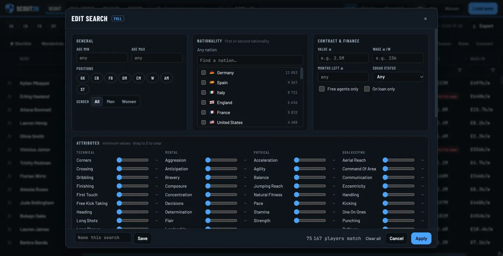

Search the whole save
Every player in your save, men and women, from every nation. Stack filters on age, position, value, wage, contract and attributes, then save the searches you use again.

- Pick one or several nations, first or second nationality.
- Set a minimum for any attribute.
- Name and save the search. The counter shows how many players match.